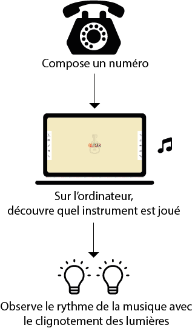
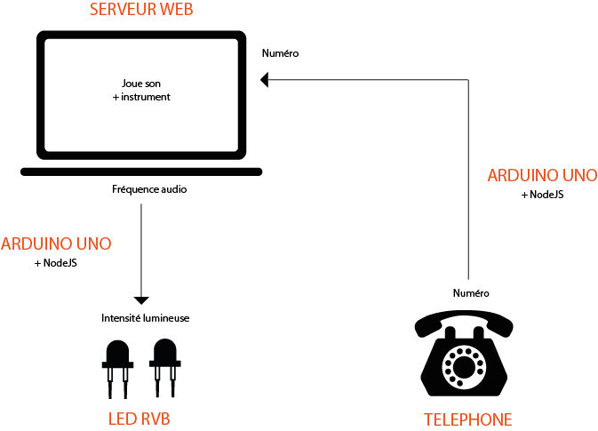
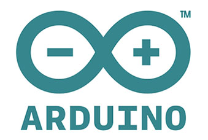

About
Projet réalisé par Diana & Nathalie Marchal, créé à Gobelins à l'occasion d'un workshop Arduino.
Nous avions pour but de créer une interface homme-machine (IHM) en utilisant un téléphone à cadran rotatif.
Avec le processus de reverse engineering, nous avons connecté le téléphone à un serveur web pour jouer des sons en animant l’instrument joué à l’écran en fonction du numéro composé.
Expérience optimisée pour Chrome 33+
Concept
Nous voulions créer un dispositif adressé aux enfants, à travers la découverte musicale et l’éveil sonore.
En fait, on est parties du constat que les enfants aiment manipuler les objets du quotidien, en particulier des téléphones.
On vous présente donc Rototo, le rotaphone qui permet aux plus petits d’apprendre l’anglais et les instruments de manière ludique !
Usage
Schéma
Technologies
- Arduino : nous avons utilisé une carte arduino UNO pour connecter les câbles du téléphone à cadran rotatif au serveur web.
- HTML5 & javaScript : on a utilisé l’API audio HTML5 pour récupérer l’amplitude sonore et jouer des sons.
- Node.js & Johnny Five : pour accéder aux signaux créés par la composition d’un numéro, on a utilisé les websockets pour envoyer ces données à l’interface web en javascript. Grâce à NodeJS on a aussi envoyé l’amplitude audio aux composants de l’arduino (à la LED) pour changer l’intensité de la lumière en fonction du rythme de la musique.